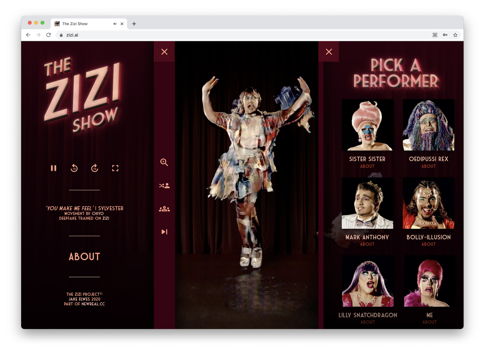
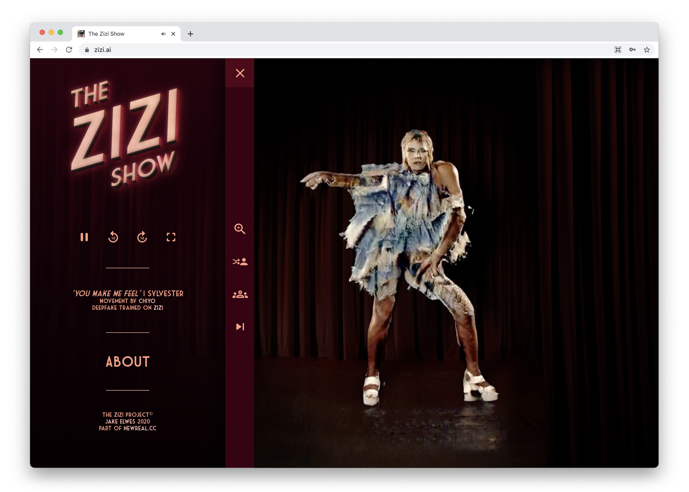
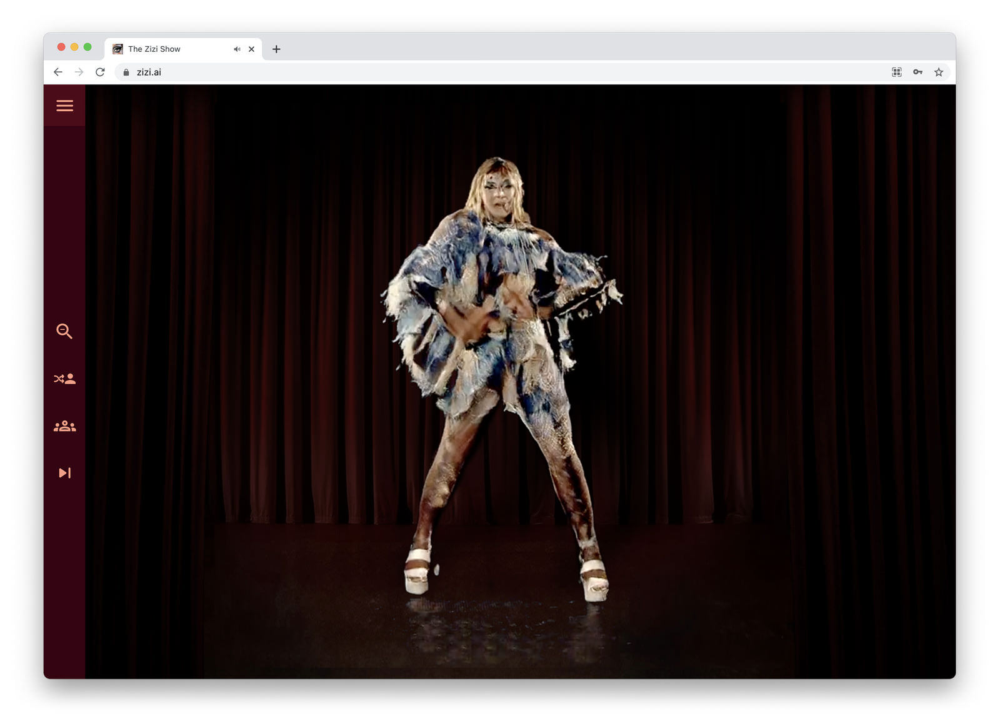
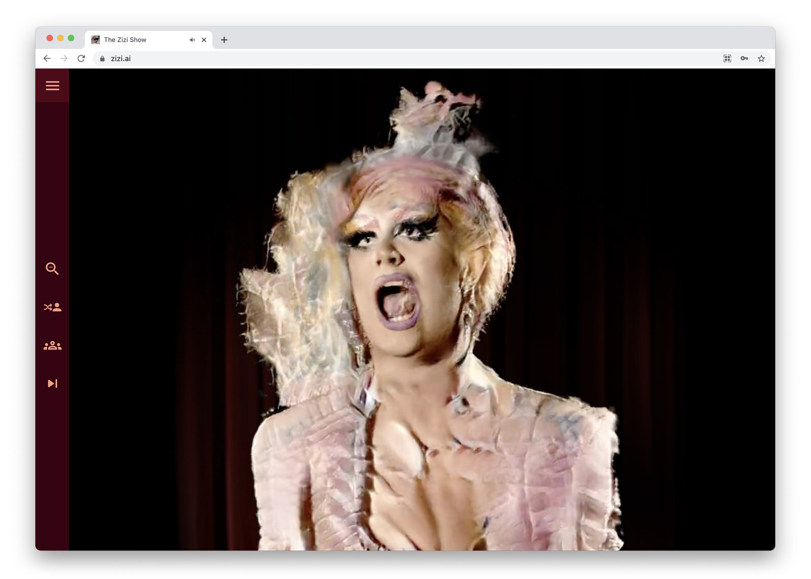
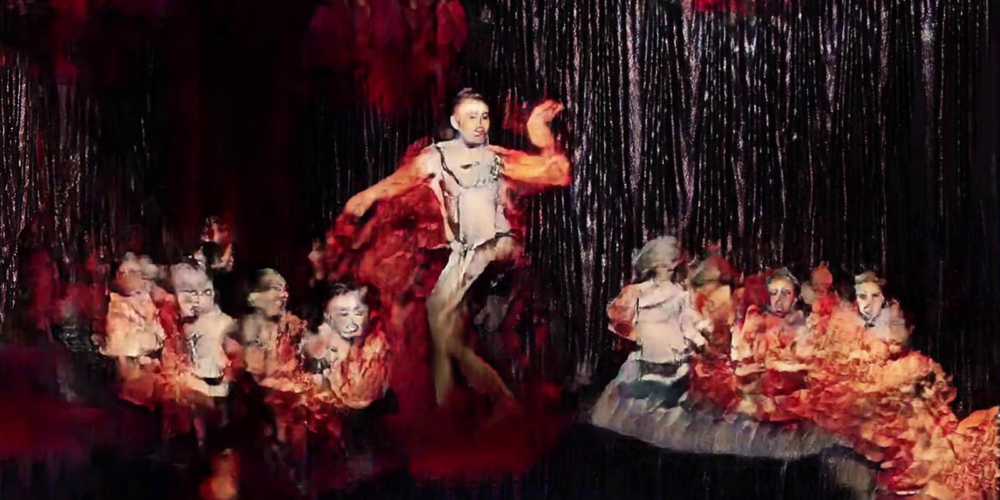
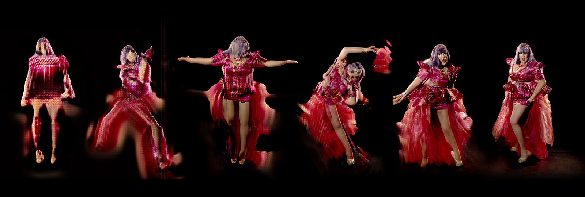

Drag Queens, Drag Kings, Drag Things and Artificial Intelligence…
The Zizi Show (2020) is a deepfake drag cabaret, a virtual online stage hosting a
groundbreaking new show with a twist. It features acts that have been constructed using
deepfake technology, learning how to do drag by watching a diverse group of human
performers. The Zizi Show dissects one of the dominant myths about AI, the notion that
'an AI' is a thing we might mistake for a person.
The bodies in the show have been generated by neural networks trained on a community of
drag artists who were filmed to create training datasets at a London cabaret venue
closed during COVID-19. During each act audiences are invited to interact with the
website and play with which deepfake bodies perform which songs. At times this breaks
down when the A.I. tries to conceive impossible positions or combines multiple different
queer identities; it can even reveal the skeleton tracking the deepfake is built on.
The deepfakes were created collaboratively in celebration, resisting the exploitative
and oppressive nature of deepfakes.
The Zizi Show constructs and then deconstructs a virtual cabaret that pushes the limits
of what can be imagined on a digital stage.
The Zizi Project (2019 - ongoing) is a collection of works by Jake Elwes exploring
the intersection of Artificial Intelligence (A.I.) and drag performance. Drag
challenges gender and explores otherness, while A.I. is often mystified as a concept
and tool, and is complicit in reproducing social bias. Zizi combines these themes
through a deepfake, synthesised drag identity created using machine learning. The
project explores what AI can teach us about drag, and what drag can teach us about
A.I.
Making of The Zizi Show - Jake Elwes discusses Deepfake Drag
 The Zizi Show (2020), stills from zizi.ai
Welcome to The Zizi Show (performed by ME the Drag Queen)
The Zizi Show - I Am What I Am (performed by ME the Drag Queen)

The Zizi Show (2020), concept art

The Zizi Show (2020), montage of a deepfake training on drag queen Lilly Snatchdragon